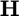
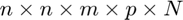
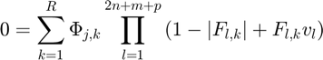
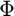
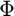
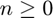
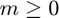
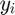
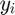

dmss
Multilinear descriptor state-space model (implicit)
Contents
Syntax
sys = dmss() Create empty dmss object with an empty hyCPN1 tensor/object.
sys = dmss(H) Construct a continuous-time (ts = 0) dmss object when H is a hyCPN1 tensor/object.
sys = dmss(mssSys) Convert a mss object into a dmss object with a similar stepsize ts, when mssSys is a mss object.
sys = dmss(H,ts) Construct a dmss object when H is a hyCPN1 objct/tensor, with ts as stepsize (ts = 0: continuous-time, ts > 0: discrete-time).
Description
The implicit multilinear time invariant (iMTI) model format has been introduced in [1]. In general, iMTI models can be described by a set of  implicit continuous- time differential algebraic equations (DAEs)
implicit continuous- time differential algebraic equations (DAEs)

containing only multilinear functions  . Multilinear models can be represented using tensors and the system of equations can be represented by using the extended tensor product
. Multilinear models can be represented using tensors and the system of equations can be represented by using the extended tensor product

of the model tensor  with the dimensions  and monomial tensor  with the dimensions
with the dimensions  , see [1]. This utilizes tensor decomposition methods which introduces the reduced norm-1 canonical polyadic decomposed (CPn1) tensor representation of iMTI models, see [2], where the
, see [1]. This utilizes tensor decomposition methods which introduces the reduced norm-1 canonical polyadic decomposed (CPn1) tensor representation of iMTI models, see [2], where the  equation
equation

can be represented in terms of the structure matrix  with the dimensions
with the dimensions  and parameter Matrix  with the dimensions
and parameter Matrix  with the dimensions  . While
. While
![$$\mathbf{v} = \left[\mathbf{\dot{x}}, \mathbf{x}, \mathbf{u}, \mathbf{y}\right]'$$](dmssDoc_eq11204248482356652506.png)
represents the signal vector of state derivatives (continuous time) / next states (discrete time), inputs and auxiliary/algebriac variables.
sys = dmss(H, ts) creates an implicit/decriptor multilinear time invriant (iMTI) model stored by using the sparse norm-1 canonical polyadic decomposed (CPn1) tensor H, as a hyCPN1 object, and the stepsize ts.
Properties
H - System tensor
System tensor, specified as canonical decomposed norm-1 tensor (hyCPN1-object).
n - Number of states
Number of states, specified as an integer .
m - Number of inputs
Number of inputs, specified as an integer .
p - Number of algebraic variables
Number of states, specified as an integer  .
.
nEq - Number of equations
Number of equations, specified as an integer  .
.
stateName - Names of states
Names of states, specified as an string vector with  entries.
entries.
stateUnit - Units of states
Units of states, specified as an string vector with entries.
algebraicName - Names of algebraic variables
Names of algebraic variables, specified as an string vector with  entries.
entries.
algebraicUnit - Units of algebraic variables
Units of algebraic variables, specified as an string vector with entries.
inputName - Names of inputs
Names of inputs, specified as an string vector with  entries.
entries.
inputUnit - Units of inputs
Units of inputs, specified as an string vector with entries.
Object Functions
| dmsim | Simulation class to simulate time response of dynamic system to arbitrary inputs. |
| sym2dmss | Transfer symbolic equations into dmss model. |
| c2d | Convert continuous-time dynamic iMTI system to discrete time. |
| d2c | Convert discrete-time dynamic iMTI system to continuous-time. |
| d2d | Resample discrete-time dynamic iMTI system. |
| append | Append multiple dmss-objects. |
| connect | Connect signals of dmss objects, based of index matrices or signal names. |
| jacobian | Calculate jacobian matrix of the set of equations of a dmss model. |
| incidenceMatrix | Calculate incidence matrix of the set of equations of a dmss model. |
| symbolicEquations | Calculate symbolic equations of a dmss model with symbolic variables |
| algebraicElimination | Eliminate algrbaic equalities and variables of a dmss model, if its possible while maintaining the implicit multilinear structure. |
| normalize | Coordinate transformation of variables for dmss models. |
| replaceSymbolicParameters | Replace symbolic parameter values of the model tensor. |
Examples
Symbolic to dmss conversion and simulation of the the aizawa attractor
The aizawa attractor (from [3]) can be represented by an iMTI model using additional auxiliary variables and euqations. When using sym2dmss needed auxiliary variables will be generated automatically. The equations of the aizawa attractor are
Eq = {"dx1 = (x3-b)*x1 -d*x2";...
"dx2 = d*x1+ (x3-b)*x2";...
"dx3 = c+ a*x3 - x3^3/3 - x1^2 + f*x3*x1^3"};
and can be directly used for creating a continuous time dmss object with
Ts = 0;
sys = sym2dmss(Eq, Ts, {"dx", "x", "u", "y"});
Reduced by 6 column(s) and 0 equation(s) with trivial Reduction due to duplications.
The equations of the resulting iMTI model can be viewed with
symEq = sys.symbolicEquations
symEq =
xp1 + b*x1 + d*x2 - x1*x3 == 0
xp2 + b*x2 - d*x1 - x2*x3 == 0
3*xp3 - 3*c - 3*a*x3 + 3*x1*y1 + x3*y3*y4 - 3*f*x1*x3*y1 == 0
y1 - x1 == 0
y2 - x1 == 0
y3 - x3 == 0
y4 - x3 == 0
where  are the state derivatives,
are the state derivatives,  are states (differential variables),  are algebriac variables and
are states (differential variables),  are algebriac variables and  are input signals. One can see that due to the quadratic and cubic terms additional auxiliary variables y along with additional auxiliary equations have been created.
are input signals. One can see that due to the quadratic and cubic terms additional auxiliary variables y along with additional auxiliary equations have been created.
For simulation the symbolic Parameters must be replaced by numeric values
symParameters = ["a", "b", "c", "d", "f"]; numParameters = [0.095, 0.7, 0.65, 3.5, 0.1]; sys = sys.replaceSymbolicParameters(symParameters, numParameters);
Simulation can be done with creating a dmsim object (for more see: ...) using the iMTI model sys
tend = 1e3; x0 = [0.1, 0, 0]; simout = dmsim(sys, x0, [0 tend], []);
Seperation in 3 subset(s) with 7 subproblem(s), from which 7 are explicit solvable.
The results can be accessed as properties of the dmsim object and plotted
plot3(simout.x(:,1), simout.x(:,2), simout.x(:,3))
grid on

Creation by using the hyCPN1 tensor class for a simple thermal flow system
By creating a empty hyCPN1 object the object structure will be generated
H = hyCPN1();
and can be accessed via the properties of the object. The structure matrix can be manipulated by calling its property
H.F.stateDerivative = [1 0 0 0 0 0 0 0]; H.F.state = [0 1 0 0 1 0 sym("k_3") sym("k_5")]; H.F.input = [0 1 1 0 0 0 sym("k_2") sym("k_4");... 0 0 1 0 0 0 0 0;... 0 0 0 0 0 1 0 0]; H.F.algebraic = [0 0 0 1 0 0 0 0;... 0 0 0 0 1 1 sym("k_1") 0];
Similar the parameter matrix can be accessed, here using partly symbolic parameters.
H.phi.equality = [sym("m_w")*sym("c_w") sym("c_w") -sym("c_w") 1 0 0 0 0;... 0 0 0 1 -sym("A") sym("A") 0 0;... 0 0 0 0 0 0 sym("phi_1") sym("phi_2")];
A continuous time dmss model can be created by
sys = dmss(H,0);
The equations can be checked by
disp(sys.symbolicEquations)
y1 + c_w*m_w*xp1 - c_w*u1*u2 + c_w*u1*x1 == 0
y1 + A*u3*y2 - A*x1*y2 == 0
phi_2*(u1*conj(k_4) - abs(conj(k_4)) + 1)*(x1*conj(k_5) - abs(conj(k_5)) + 1) + phi_1*(u1*conj(k_2) - abs(conj(k_2)) + 1)*(x1*conj(k_3) - abs(conj(k_3)) + 1)*(y2*conj(k_1) - abs(conj(k_1)) + 1) == 0
where are the state derivatives, are states (differential variables), are algebriac variables and are input signals.
As before the symbolic parameters can be changed to numeric parameters by the replaceSymbolicParmeters function.
symParameters = [sym("m_w") sym("c_w") sym("A") sym("phi_1") sym("phi_2") sym("k_1") sym("k_2") sym("k_3") sym("k_4") sym("k_5")]; di = 206.5/1000; A = di^2 *pi()/4; m_w = A*998*1; c_w = 4200; k = [-0.1497, -2.3659, -0.0109, 0.5556, 0.0131, 0.9872, 0.0259]; numParameters = [m_w, c_w, A, k]; sys = sys.replaceSymbolicParameters(symParameters, numParameters); disp(sys.symbolicEquations)
(2411735508342479*xp1)/17179869184 + y1 - 4200*u1*u2 + 4200*u1*x1 == 0
y1 + (4826582636502955*u3*y2)/144115188075855872 - (4826582636502955*x1*y2)/144115188075855872 == 0
(1497*((1389*u1)/2500 + 1111/2500)*((131*x1)/10000 + 9869/10000)*((109*y2)/10000 - 9891/10000))/10000 - (23659*((617*u1)/625 + 8/625)*((259*x1)/10000 + 9741/10000))/10000 == 0
The system can be simulated by using the dmsim class. A time vector, initial states and input values need to be defined.
t = 0:60; x0 = 8; u = ones([length(t),3]); u(:,1) = 0.8*A*998 * (0.6 + 0.2*rand(length(t),1)); u(:,2) = 8 + rand(1,length(t)); u(:,3) = 25 + asinh((t-30)/10).*cos(t/5);
For continuous time system standard ode options can be used
opt = odeset('RelTol',1e-5,'AbsTol', 1e-3, 'MaxStep', 0.5);
and simulation will be performed
simout = dmsim(sys, x0, t, u, opt);
Seperation in 1 subset(s) with 3 subproblem(s), from which 3 are explicit solvable.
The results can be accessed and plotted by the properties of the simulation object simout
subplot(2,1,1) plot(simout.tsim, simout.x) grid on subplot(2,1,2) plot(simout.ut, simout.u) grid on

References
[1] G. Lichtenberg et al., "Implicit multilinear modeling," at - Automatisierungstechnik, vol. 70, no. 1, pp. 13–30, Jan. 2022. doi:10.1515/auto-2021-0133
[2] N. Jöres et al., “Reduced CP representation of multilinear models,” Proceedings of the 12th International Conference on Simulation and Modeling Methodologies, Technologies and Applications, 2022. doi:10.5220/0011273100003274
[3] W. F. Langford, "Numerical studies of torus bifurcations,” Numerical Methods for Bifurcation Problems, pp. 285–295, 1984. doi:10.1007/978-3-0348-6256-1_19
See Also
mss, msim, dmsim, sym2dmss, mss2dmss, jacobian, incidenceMatrix, symbolicEquations, c2d, d2c, d2d, algebraicElimination, normalize, replaceSymbolicParameters, append, connect, hyCPN1
Author(s): Torben Warnecke